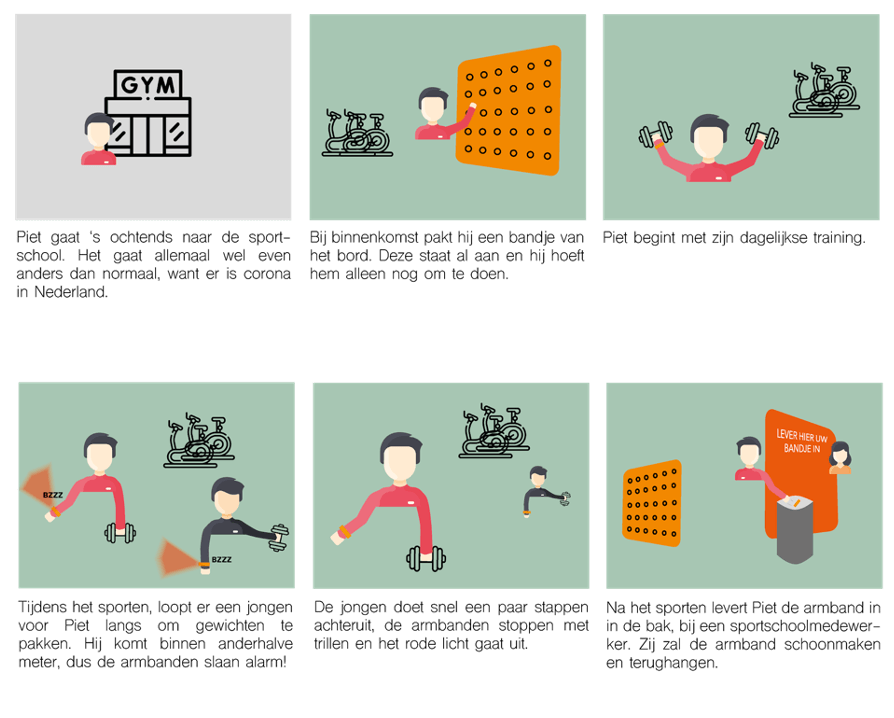
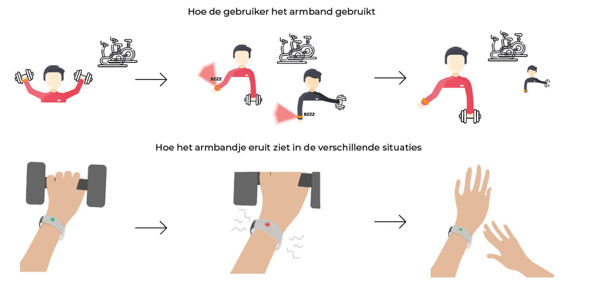

Sport Safe Bracelet
De opdracht
De opdracht was om een product te ontwerpen die zorgt dat mensen afstand houden in de Coronatijd.
Voor deze opdracht moesten wij uiteindelijk een prototype ontwerpen van het product. Met behulp van verschillende onderzoek- en ontwerp methodes zijn wij tot een goed product gekomen, namelijk Sport Safe Bracelet.
Jaar
2020
Diensten
UX design
Product Design
Teamgenoten
Roel Komen, Liana Boyadjian en Niga Majid
Mijn rol
Ik zorgde voor een duidelijke planning en hield overzicht van het hele project, waardoor wij goed wisten wat er gedaan moest worden. Daarnaast was ik vooral veel bezig met onderzoeken en documenteren.
Sport Safe Bracelet
Hoe kunnen wij door een interactief product, ervoor zorgen dat iedereen afstand houdt van elkaar in de sportschool, zodat we ouderen beschermen?
De Sport Save Bracelet meet via bluetooth de afstand met andere armbanden. De gebruiker doet de armband meteen om bij binnenkomst en er brandt een groen lampje als er 1,5 meter afstand wordt bewaard. Als gebruikers dichten dan 1,5 meter bij elkaar staan gaat er een rood lampje knipperend branden en gaat de armband trillen.
Het proces
Enquête
Wij hebben in het begin van het onderzoek een enquête afgelegd, om een beeld te krijgen van de situatie. Uit de enquête hebben wij waardevolle informatie gehaald. Uit deze enquête blijkt dat de leeftijd van mensen die naar de sportschool gaan, gemiddeld rond de 22 ligt. Ook is terug te zien dat er extra rekening wordt gehouden met ouderen.
Customer Journey Mapping
Om inzicht te krijgen in hoe de situatie momenteel is en waar het grootste probleem ligt hebben we een Customer Journey Map gemaakt, waarin het hele moment van naar de sportschool gaan, in de sportschool zijn en weer weggaan uit de sportschool tot in detail is omschreven.
Job Stories
Met behulp van ons onderzoek hebben wij Jobstories gemaakt van de stakeholders.
Ouderen: Wanneer ik ga sporten, wil ik dat iedereen het armbandje gaat dragen, zodat ik niet binnen 1,5 meter kom van mensen en niet besmet raak.
Jongeren: Wanneer ik ga sporten, wil ik worden herinnerd om 1,5 meter afstand te houden, zodat ik niet vergeet om afstand te houden en besmet raak.
Sportschool: Wanneer wij mensen ontvangen, willen wij dat zij allemaal onze nieuwe armbanden gebruiken, zodat wij open kunnen blijven en niet zorgen voor meer besmettingen.
Overheid: Wanneer ik controleer, wil ik zien dat de maatregelen worden nageleefd en de armbanden worden gebruikt, zodat ik ervoor kan zorgen dat het virus niet wordt verspreid en de sportscholen open kunnen blijven.
Design Principles
Affordance
Een affordance is de perceptie van de functie van een object. Door de kleuren in het armbandje maakt het duidelijk of je goed bezig bent of niet.
Mapping
De gebruiker is aan het sporten. Wanneer hij/zij binnen de 1,5 meter afstand komt van een ander persoon zal het armbandje een rood lichtje laten branden en trillen.
Signifiers
Signifiers geven door middel van hints, weer hoe een product werkt. Wanneer je het concept ziet, is het meteen duidelijk dat het een armband is die je om kunt doen.
Feedback
De armband zal feedback geven als mensen en dus 2 armbanden te dicht bij elkaar komen, hierdoor zal de armband een rood lampje laten branden en gaan trillen.
